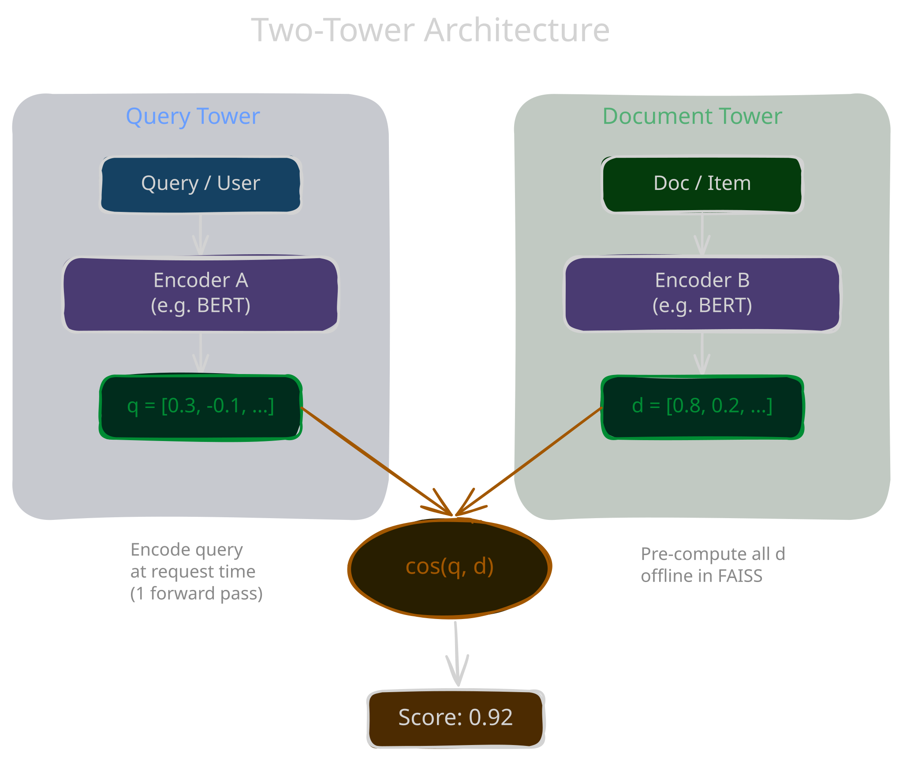

1 forward pass at request time
Key Advantage: Decoupled Encoding
Documents encoded offline → stored in vector index (FAISS, Milvus). At query time: encode query once → ANN lookup in milliseconds. O(1) vs O(N) forward passes.
Cross-Encoder
O(N) passes
per query
Two-Tower
1 pass + ANN
sub-millisecond lookup
Quality-Speed Tradeoff
No cross-attention between inputs = less accurate than cross-encoders. Solution: retrieve top-k with two-tower, rerank with cross-encoder.
Millions of documents
corpus
Two-Tower ANN
top 100
Cross-Encoder Rerank
top 10
Siamese (shared weights) — when both inputs are the same type (e.g.
sentence–sentence).
Asymmetric (separate weights) — when inputs are heterogeneous (e.g. query–document, user–item).
Asymmetric (separate weights) — when inputs are heterogeneous (e.g. query–document, user–item).